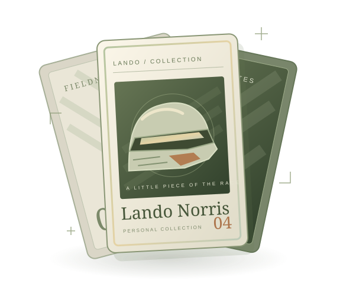

看见完整卡面
正面、背面与局部细节，尽量保留原始画面和卡面信息。
PROJECT 003 / LANDO CARD COLLECTION
我的兰多卡牌收藏册。
把赛道上的瞬间，留在翻开的这一页。

收藏册封面 · 主题插画THE COLLECTION BOOK
卡面的设计、不同系列的细节，还有卡上定格的瞬间。收藏册把它们放在一起，让每一张卡都有自己的位置。
卡牌实拍与具体条目正在整理。本页目前展示收藏主题插画，不代表已拥有的具体卡片。
HOW I KEEP THE DETAILS
正面、背面与局部细节，尽量保留原始画面和卡面信息。
品牌、年份、系列与卡号，按实际卡面和已核实的资料记录。
一个表情、一套设计，或一个想留下的比赛瞬间。